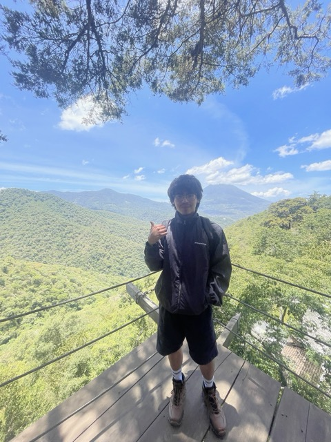
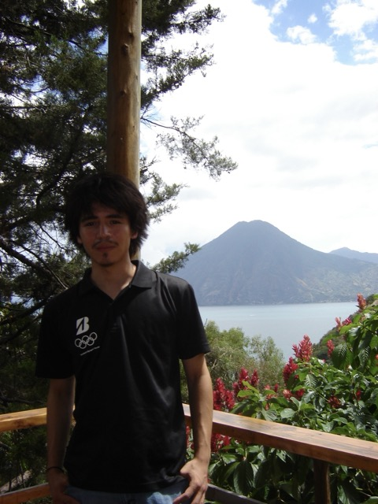
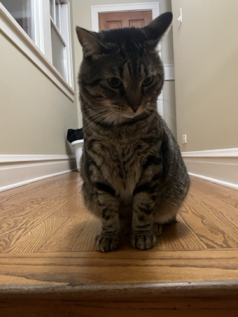
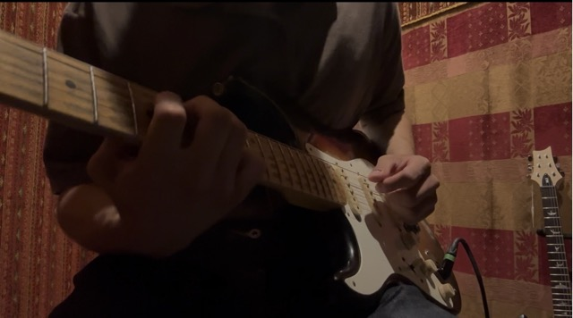

Today: a heading, a masonry of polaroids, then a flat facts list. It reads as a list of stuff, not as you. These variants each give it a point of view.
A real intro sentence on the left with the facts as an index beneath it. Photos scatter like prints on a desk on the right. Closest to what you have, but with a voice.
Cost: needs real intro copy from you. Photo count is fixed at about four, so extras get dropped.
I'm Esequiel. I build things that move, play guitar a little too loudly, and solve sudoku faster than is healthy.




The TODO.md idea. A deck of polaroids you click through, with a caption panel that changes per card. Facts become chips grouped by theme, which is where cooking and favorite food can live later.
Cost: new interactive component with state. Content hides behind clicks, so it is the most playful and the least scannable.
click to shuffle
Short story or detail per card goes here. This is the "more personal detail" slot from your TODO.
PRS SE Custom 24 · Stratocaster at Chicago Music Exchange
Photos and facts share one grid. Each fact becomes a tile with its own weight, and Sudoku gets a big number. The Spotify "Currently" widget slots in as a tile too.
Cost: drops the tilted polaroid look for cropped photos, so the handwritten charm shrinks. Best scannability.